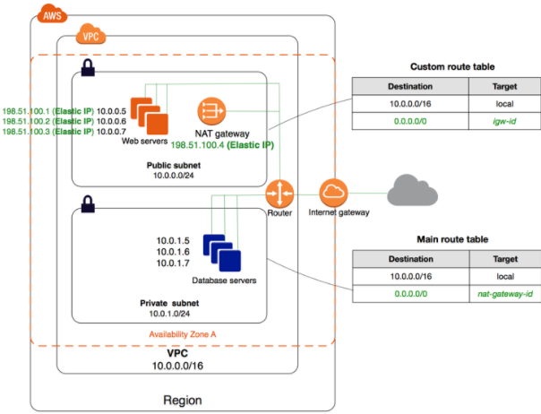
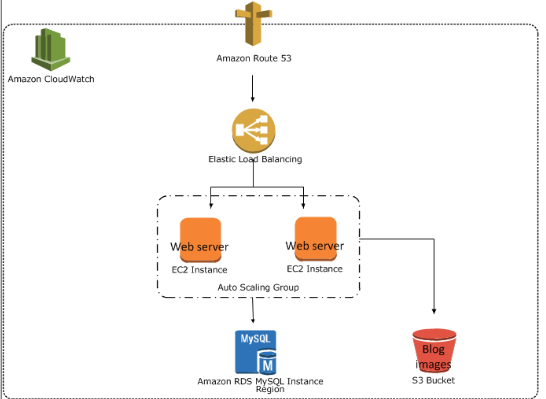
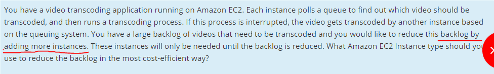
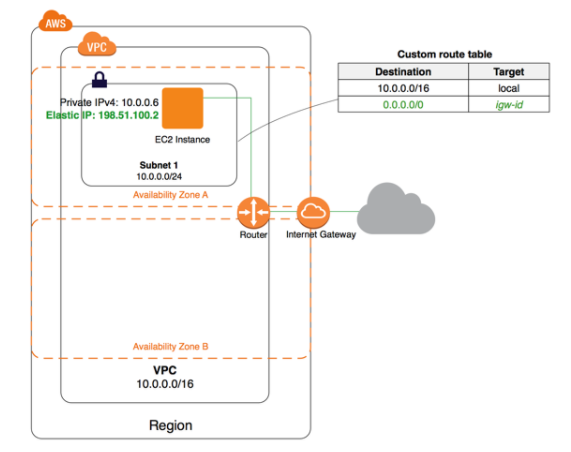
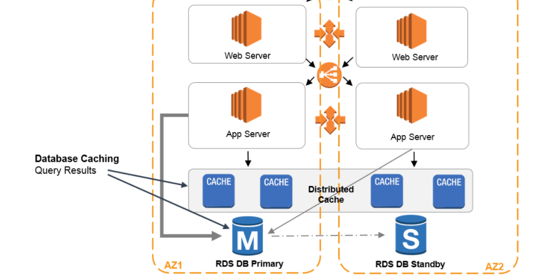
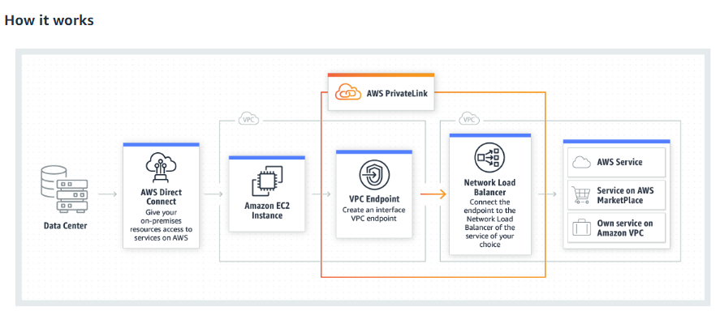
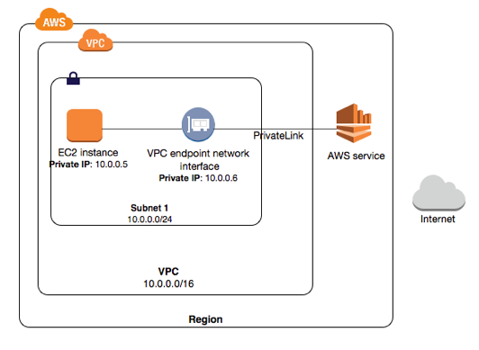
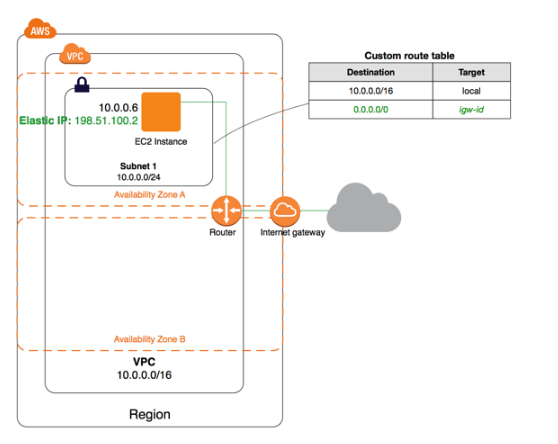

-
Attempt
36 -

Marks Obtained
0 / 65 -

Your score
0.0% -

Time Taken
00 H 05 M 15 S -

Result
Failed
| No | Domain | Total Question | Correct | Incorrect | Unattempted | Marked as Review |
|---|---|---|---|---|---|---|
|
|
|
|
|
|
|
|
|
|
|
|
|
|
|
|
|
|
|
|
|
|
|
|
|
|
|
|
|
|
|
|
|
|
|
|
|
|
|
|
|
|
|
|
|
|
|
|
A customer is planning to host an AWS RDS instance. He needs to ensure that the underlying data is encrypted. How can this be achieved? (SELECT 2)
Correct Answer – A and C
Encryption for the database must be done during the creation of the database. Also, you need to ensure that the underlying instance type supports DB encryption.
- For more information on database encryption, please refer to the URL below:
Encryption at Rest is not available for DB instances running SQL Server Express Edition.
- For more information on encryption, please refer to the URL below:
Try now labs related to this question
This lab walks you through to the creation and testing of an Amazon Relational Database Service (Amazon RDS) database. We will create an RDS MySql Database and test the connection using MySQL Workbench.
- Credit Needed10
- Time 0 : 50
You are developing a new mobile application which is expected to be used by thousands of customers. You are considering to store user preferences in AWS, and need a data store to save the same. Each data item is expected to be 20KB in size. The solution needs to be cost-effective, highly available, scalable, and secure. How would you design the data layer?
Correct Answer – B
In this case, since each data item is 20KB and given the fact that DynamoDB is an ideal data layer for storing user preferences, this would be the ideal choice. Also, DynamoDB is a highly scalable and available service.
- For more information on AWS DynamoDB, please refer to the URL given below:
https://aws.amazon.com/dynamodb/
Try now labs related to this question
This lab walks you through to Amazon DynamoDB features. In this lab, we will create a table in Amazon DynamoDB to store information and then query that information from the DynamoDB table.
- Credit Needed10
- Time 0 : 30
Your Operations department is using an incident-based application hosted on a set of EC2 Instances. These instances are placed behind an Auto Scaling Group to ensure that the right number of instances are in place to support the application. The Operations department has expressed dissatisfaction with regard to poor application performance every day at 9:00 AM. However, it is also noted that the system performance returns to optimal at 9:45 AM.
What could be done to fix this issue?
Correct Answer - D
Scheduled Scaling can be used to ensure that the capacity is peaked before 9:00 AM every day.
AWS Documentation further mentions the following on Scheduled Scaling:
Scaling based on a schedule allows you to scale your application in response to predictable load changes. For example, every week the traffic to your web application starts to increase on Wednesday, remains high on Thursday, and starts to decrease on Friday. You can plan your scaling activities based on the predictable traffic patterns of your web application.
- Option A is incorrect because a scheduled scaling should be used as per the requirements of the question instead of dynamic scaling
- Option B is incorrect because adding another autoscaling group will not solve the problem.
- Option C is incorrect because changing the cooldown timers of the existing autoscaling group will not meet the requirements of the question.
For more information on Scheduled Scaling, please refer to the URL below:
Try now labs related to this question
AWS Auto Scaling will automatically scale resources as needed to align to your selected scaling strategy, This lab walks you through to use Auto Scaling to automatically launch or terminate EC2’s instances based on user defined policies, schedules and health checks.
- Credit Needed10
- Time 0 : 55
A database hosted in AWS is currently encountering an extended number of write operations and is not able to handle the load. What should be done to the architecture to ensure that the write operations are not lost under any circumstances?
Correct Answer – C
SQS Queues can be used to store the pending database writes, and these writes can then be added to the database. It is the perfect queuing system for such architecture.
Note that adding more IOPS may help the situation but will not totally eliminate the chances of losing database writes.
- For more information on AWS SQS, please refer to the URL below:
Note:
The scenario in the question is that the database is unable to handle the write operations and the requirement is that without losing any data, we need to perform data writes to the database.
FIFO queues support up to 3,000 messages per second with batching and a single Amazon SQS message queue can contain an unlimited number of messages. However, there is a limit of 120,000 counts for the number of inflight messages for a standard queue and 20,000 counts for a FIFO queue.
Messages are inflight after they have been received from the queue by a consuming component, but have not yet been deleted from the queue.
You have created an AWS Lambda function that will write data to a DynamoDB table. Which of the following must be in place to ensure that the Lambda function can interact with the DynamoDB table?
Correct Answer – A
AWS Documentation mentions the following to support this requirement:
Each Lambda function has an IAM role (execution role) associated with it. You specify the IAM role when you create your Lambda function. Permissions you grant to this role determine what AWS Lambda can do when it assumes the role. There are two types of permissions that you grant to the IAM role:
- If your Lambda function code accesses other AWS resources, such as to read an object from an S3 bucket or write logs to CloudWatch Logs, you need to grant permissions for relevant Amazon S3 and CloudWatch actions to the role.
- If the event source is stream-based (Amazon Kinesis Data Streams and DynamoDB streams), AWS Lambda polls these streams on your behalf. AWS Lambda needs permissions to poll the stream and read new records on the stream so you need to grant the relevant permissions to this role.
For more information on the Permission Role model for AWS Lambda, please refer to the URL below.
https://docs.aws.amazon.com/lambda/latest/dg/intro-permission-model.html
Your company has the data hosted in an Amazon Aurora MySQL DB. Since this data is critical, there is a need to ensure that it can be made available in another region in case of a disaster. How could this be achieved?
Correct Answer - C
Read replicas in Amazon RDS for MySQL, MariaDB, PostgreSQL, and Oracle provide a complementary availability mechanism to Amazon RDS Multi-AZ Deployments. You can promote a read replica if the source DB instance fails. You can also replicate DB instances across AWS Regions as a part of your disaster recovery strategy. This functionality complements the synchronous replication, automatic failure detection, and failover provided with Multi-AZ deployments.
AWS Documentation mentions the following:
You can create an Amazon Aurora MySQL DB cluster as a Read Replica in a different AWS Region than the source DB cluster. This approach can improve your disaster recovery capabilities, let you scale read operations into a region that is closer to your users, and make it easier to migrate from one region to another.
- For more information on Amazon Aurora Cross-Region Replication, please refer to the URLs below.
As per the AWS documentation, only creating the Read Replicas are the correct option for a disaster recovery situation.
Page 600 https://docs.aws.amazon.com/AmazonRDS/latest/AuroraUserGuide/aurora-ug.pdf
NOTE:
** In the question, it is clearly mentioned that "there is a need to ensure that it can be made available in another region in case of a disaster." So Multi-AZ is not the regional-wide solution here.**
Try now labs related to this question
This lab walks you through the creation and testing of an Amazon Aurora database. We will create an Aurora MySQL Database and and test the connection.
- Credit Needed10
- Time 1 : 0
Your company has a requirement to host a static website on AWS. Which of the following steps would help to implement a quick and cost-effective solution for this requirement? (SELECT TWO)
Correct Answer – A and C
S3 would be an ideal and cost-effective solution for the above requirement.
AWS Documentation mentions the following on using S3 for static website hosting:
You can host a static website on Amazon Simple Storage Service (Amazon S3). On a static website, individual webpages include static content. They might also contain client-side scripts.
For more information on static website hosting using S3, please refer to the URL below.
https://docs.aws.amazon.com/AmazonS3/latest/dev/WebsiteHosting.html
Try now labs related to this question
This lab walks you through how to create a static HTML webstie using aws S3 and make it global to the internet.
- Credit Needed10
- Time 0 : 30
A company, currently storing a set of documents in the AWS Simple Storage Service, is worried about the potential loss if these documents are ever deleted. What could be used to ensure protection from the loss of the documents stored in S3? (SELECT TWO)
Correct Answer - A and D
Amazon S3 has an option for Versioning as shown below. Versioning is on the bucket level and can be used to recover prior versions of an object.

For more information on S3 Versioning, please refer to the URL below:
We can also avoid 'deletion' of objects from S3 bucket by writing IAM policy.
Code
{
"Id": "ExamplePolicyId12345678",
"Statement": [
{
"Sid": "ExampleStmtSid12345678",
"Action": [
"s3:DeleteObject"
],
"Effect": "Deny",
"Resource": "arn:aws:s3:::test-example-com",
"Principal": {
"AWS": [
"*"
]
}
}
]
}
For more information, please refer to the URL below:
Try now labs related to this question
This lab walks you through to the steps how to Enables Versioning to a AWS S3 Bucket. Versioning enables you to keep multiple versions of an object in one bucket. In this lab we learn how to enable object versioning on a S3 bucket.
- Credit Needed10
- Time 0 : 30
An application with a 150 GB relational database runs on an EC2 Instance. This is a critical business application requiring more than 16,000 IOPS of throughput per volume. Which storage type would be preferred?
Answer – A
As per AWS documentation Provisioned IOPS (SSD) are used for applications that require high Inputs/Outputs Operations per sec and is mainly used in large databases such as Mongo, Cassandra, Microsoft SQL Server, MySQL, PostgreSQL, Oracle where as Throughput optimized HDD although it is cheaper compared to PIOPS is used for dataware houses where it is designed to work with throughput intensive workloads such as big data, log processing etc.
So Option A is the right choice for this case.
AWS Documentation mentions the following:
Provisioned IOPS SSD (io1) volumes are designed to meet the needs of I/O-intensive workloads, particularly database workloads that are sensitive to storage performance and consistency.
Max IOPS**/Volume for
EBS Provisioned IOPS SSD - 64,000
EBS General Purpose SSD - 16,000
Throughput Optimized HDD - 500
Cold HDD - 250
For more information on AWS EBS Volumes, please visit the following URL:
https://docs.aws.amazon.com/AWSEC2/latest/UserGuide/EBSVolumes.html
Note:
as a solutions architect we need to understand the nature of the application and requirement. The question also says that "An application with a 150 GB relational database runs on an EC2 Instance. This application will be used frequently with a lot of database reads and writes."
It also requires high reads and writes, in order to satisfy the application need, we need to go with Provisioned IOPS.
The question also states that the application will be frequently used for heavy read and write operations. So in that case General Purpose SSD won't be able to handle that workload. Hence option A seems to be the right choice.
You manage the IT users for a large organization that is moving many services to AWS. You want a seamless way for your employees to log in and use cloud services. You also want to use AWS Managed Microsoft AD and have been asked if users will be able to access services in the on-premises environment. What would you respond?
Correct Answer: C
- Option C is correct. Because you want to use AWS Managed Microsoft AD, you want to be certain that your users can use the AWS cloud resources as well as services in your on-premise environment. In order to make your company have connectivity for AWS services, once you implement VPN or Direct Connect, your AWS Managed Microsoft AD can be used for both cloud services and on-premises services.
- Option A is incorrect. When data can be synchronized from on-premises to the cloud, it is not required.
- Option B is incorrect. AWS Managed Microsoft AD can be used for both, it’s not one or the other.
- Option D is incorrect. AWS Managed Microsoft AD. being a managed service limits some capabilities versus running Active Directory by itself on EC2 instances
For more information, please visit the URLs below:
Your company is planning to use Route 53 as the DNS provider. There is a need to ensure that the company's domain name points to an existing CloudFront distribution. How could this be achieved?
Correct Answer - A
AWS Documentation mentions the following:
While ordinary Amazon Route 53 records are standard DNS records, alias records provide a Route 53–specific extension to the DNS functionality. Instead of an IP address or a domain name, an alias record contains a pointer to a CloudFront distribution, an Elastic Beanstalk environment, an ELB Classic, Application, or Network Load Balancer, an Amazon S3 bucket that is configured as a static website, or another Route 53 record in the same hosted zone. When Route 53 receives a DNS query that matches the name and type in an alias record, Route 53 follows the pointer and responds with the applicable value.
For more information on Route 53 Alias records, please visit the following URL:
Note:
Route 53 uses "Alias Name" to connect to the CloudFront as Alias Record is a Route 53 extension to DNS. Also, Alias record is similar to a CNAME record, but the main difference is - you can create Alias record for both root domain & subdomain, whereas CNAME record can be created only to subdomain. Check the below link to get more information:
A company needs to extend its storage infrastructure to the AWS Cloud. The storage needs to be available as iSCSI devices for on-premises application servers. What should be done to fulfill this requirement?
Correct Answer - D
AWS Documentation mentions the following:
By using cached volumes, you can use Amazon S3 as your primary data storage, while retaining frequently accessed data locally in your storage gateway. Cached volumes minimize the need to scale your on-premises storage infrastructure while still providing your applications with low-latency access to their frequently accessed data. You can create storage volumes up to 32 TB in size and attach iSCSI devices to them from your on-premises application servers. Your gateway stores data that you write to these volumes in Amazon S3, retains recently read data in your on-premises storage gateway's cache, and upload buffer storage.
For more information on AWS Storage Gateways, please visit the following URL:
https://docs.aws.amazon.com/storagegateway/latest/userguide/StorageGatewayConcepts.html
Your infrastructure consists of a private and public subnet in AWS. The private subnet consists of database servers and the public subnet has a NAT Instance which helps the instances in the private subnet to communicate with the Internet. The NAT Instance is now becoming a bottleneck. What changes in the current architecture could help in preventing this issue?
Correct Answer – A
The NAT Gateway is a managed resource which can be used in place of a NAT Instance. While you can consider changing the instance type for the underlying NAT Instance, this does not guarantee that the issue will not reoccur in the future.
For more information on the NAT Gateway, please visit the URL below:
https://docs.aws.amazon.com/AmazonVPC/latest/UserGuide/vpc-nat-gateway.html
Your current setup in AWS consists of the following architecture: 2 public subnets, one subnet which has web servers accessed by users across the Internet and another subnet for the database server. Which of the following changes to the architecture would add a better security boundary to the resources hosted in this setup?
Correct Answer – B
The ideal setup is to host the web server in the public subnet so that it can be accessed by users on the Internet. The database server can be hosted in the private subnet.
The below diagram from AWS Documentation shows the set up:

Try now labs related to this question
This lab walks you through how to create a VPC using AWS CloudFormation Stack. In this lab we will launch a AWS CloudFormation template to create a four-subnet Amazon VPC that spans two Availability Zones and a NAT that allows servers in the private subnets to communicate with the Internet in order to download packages and updates.
- Credit Needed10
- Time 0 : 55
Your company has a set of applications that make use of Docker containers. There is a need to move these containers to AWS. Which option below is the BEST way to set up these Docker containers in a separate AWS environment?
Correct Answer - C
The Elastic Beanstalk service can be used to host Docker containers.
AWS Documentation mentions the following:
Elastic Beanstalk supports the deployment of web applications from Docker containers. With Docker containers, you can define your own runtime environment. You can choose your own platform, programming language, and any application dependencies (such as package managers or tools), that aren't supported by other platforms. Docker containers are self-contained and include all the configuration information and software your web application requires to run.
- For more information on using Elastic Beanstalk for Docker containers, please visit the following URL:
- Option B is incorrect because just creating the EC2 Container registries would not be sufficient. We need to incorporate some automated mechanism to take care of the function of the docker container if it fails in-between. An ElasticBeanStalk would be used for this purpose.
Note:
Option A could be partially correct as we need to install docker on EC2 instance. In addition to this, you need to create an ECS Task definition which details the docker image that we need to use for containers and how many containers to be used as well as the resource allocation for each container.
But with Option C, we have this added advantage:
If a Docker container running in an Elastic Beanstalk environment is crashed or killed for any reason, Elastic Beanstalk restarts it automatically.
In the given question, we have been asked about the best method to set up docker containers, hence Option C seems to be the most appropriate.
For more information, please check the URLs below:
Try now labs related to this question
This lab walks you through to AWS Elastic Beanstalk. In this lab, you will quickly deploy and manage a Java application in the AWS Cloud without worrying about the infrastructure that runs those applications.
- Credit Needed10
- Time 0 : 45
Instances in your private subnet hosted in AWS, need access to important documents in S3. Due to the confidential nature of these documents, you have to ensure that the traffic does not traverse through the internet. As an architect, how would you implement this solution?
Correct Answer – A
AWS documentation mentions the following:
A VPC endpoint enables you to privately connect your VPC to supported AWS services and VPC endpoint services powered by PrivateLink without requiring an internet gateway, NAT device, VPN connection or AWS Direct Connect connection. Instances in your VPC do not require public IP addresses to communicate with resources in the service. Traffic between your VPC and the other services does not leave the Amazon network.
For more information on VPC Endpoints, please visit the following URL:
https://docs.aws.amazon.com/AmazonVPC/latest/UserGuide/vpc-endpoints.html
Try now labs related to this question
This lab walks you through how to create a VPC using AWS CloudFormation Stack. In this lab we will launch a AWS CloudFormation template to create a four-subnet Amazon VPC that spans two Availability Zones and a NAT that allows servers in the private subnets to communicate with the Internet in order to download packages and updates.
- Credit Needed10
- Time 0 : 55
You have a video transcoding application running on Amazon EC2. Each instance polls a queue to find out which video should be transcoded and then runs a transcoding process. If this process is interrupted, the video gets transcoded by another instance based on the queuing system.
You have a large backlog of videos that need to be transcoded and you would like to reduce this backlog by adding more instances. These instances will only be needed until the backlog is reduced. What Amazon EC2 Instance type should you use to reduce the backlog in the most cost-efficient way?
Correct Answer – B
Since the above scenario is similar to a batch processing job, the best instance type to use is a Spot Instance. Spot Instances are normally used in batch processing jobs. Since these jobs don’t last for an entire year, they can be bid upon allocated and deallocated as requested.

Reserved Instances/Dedicated Instances cannot be used since this is not a 100% used application.
There is no mention of continuous demand for work in the above scenario. Hence, there is no need to use On-Demand Instances.
For more information on Spot Instances, please visit the following URL:
https://aws.amazon.com/ec2/spot/
NOTE:
1) If you read the question once again, it has this point "These instances will only be needed until the backlog is reduced." and also "If this process is interrupted, the video gets transcoded by another instance based on the queuing system."
So, as per AWS documentation, if your application or system is fault-tolerant, Spot Instances can be used.

2) In the question, they mentioned that "reduce this backlog by adding more instances". That means the application does not fully depend on the spot instances. These are only being used for reducing the backlog load.
3) Here we have to select the most cost-effective solution. As per the first point, we conclude that the system is fault-tolerant (Interruptions acceptable).
So, Spot Instances is the best option for this scenario.
Try now labs related to this question
-
This lab walks you through the steps to launch and configure a virtual machine in the Amazon cloud.
-
You will practice using Amazon Machine Images to launch Amazon EC2 Instances and use key pairs for SSH authentication to log into your instance. You will create a web page and publish it.
- Credit Needed10
- Time 0 : 30
A company has a workflow that sends video files from their on-premise system to AWS for transcoding. They use EC2 worker instances to pull transcoding jobs from SQS. Why is SQS an appropriate service for this scenario?
Correct Answer - D
Even though SQS guarantees the order of messages for FIFO queues, the main reason for using it is because it helps in horizontal scaling of AWS resources and is used for decoupling systems.
SQS can neither be used for transcoding output nor for checking the health of worker instances. The health of worker instances can be checked via ELB or CloudWatch.
For more information on SQS, please visit the following URL:
https://aws.amazon.com/sqs/faqs/
You run an ad-supported photo sharing website using S3 to serve photos to visitors of your site. At some point, you find out that other sites have been linking to the photos on your site, causing loss to your business. What would be an effective method to mitigate this?
Correct Answer – A
Option B is incorrect because CloudFront is only used for the distribution of content across edge or region locations, and not for restricting access to content.
Option C is not feasible. Because of their dynamic nature, blocking IPs is challenging and you will not know which sites are accessing your main site.
Option D is incorrect since storing photos on an EBS Volume is neither good practice nor an ideal architectural approach for an AWS Solutions Architect.
For more information on Pre-Signed URLs, please visit the following URL:
https://docs.aws.amazon.com/AmazonS3/latest/dev/PresignedUrlUploadObject.html
Try now labs related to this question
This lab walks you through to Amazon Simple Storage Service. Amazon S3 has a simple web services interface that you can use to store and retrieve any amount of data, at any time, from anywhere on the web. In this lab we will demonstrate AWS S3 by creating a sample S3 bucket, uploading an object to S3 bucket and setting up bucket permission and policy.
- Credit Needed10
- Time 0 : 30
A company wants to create standard templates for the deployment of its Infrastructure. These templates would also be used to provision resources in another region during disaster recovery scenarios. Which AWS service could be used in this regard?
Correct Answer – C
AWS CloudFormation gives developers and systems administrators an easy way to create and manage a collection of related AWS resources, provision, and update them in an orderly and predictable fashion.
You can use AWS CloudFormation’s sample templates or create your own templates to describe the AWS resources, and any associated dependencies or runtime parameters, required to run your application.
You don’t need to figure out the order for provisioning AWS services or the subtleties of making those dependencies work. CloudFormation takes care of this for you.
After the AWS resources are deployed, you can modify and update them in a controlled and predictable manner, in effect of applying version control to your AWS infrastructure, the same way you do with your software. You can also visualize your templates as diagrams and edit them using a drag-and-drop interface with the AWS CloudFormation Designer.
For more information on AWS CloudFormation, please visit the following URL:
https://aws.amazon.com/cloudformation/
Try now labs related to this question
This lab walks you through to AWS CloudFormation features. In this lab, we will demonstrate the use AWS CloudFormation Stack in creating a simple LAMP Server.
- Credit Needed10
- Time 0 : 30
A company currently hosts its architecture in the US region. They now need to duplicate this architecture to the Europe region and extend the application hosted on this architecture to the new region. In order to ensure that users across the globe get the same seamless experience, what should be done?
Correct Answer - D
AWS Documentation mentions the following with respect to this requirement:
Geolocation routing lets you choose the resources that serve your traffic based on the geographic location of your users, means the location that DNS queries originate from.
- For more information on AWS Route 53 Routing Policies, please visit the following URL:
You have a set of EC2 Instances that support an application. They are currently hosted in the US Region. In the event of a disaster, you need a way to ensure that you can quickly provision the resources in another region. How could this be accomplished? (SELECT TWO)
Correct Answers – B and C
Snapshots can be used to create a AMI or template of the underlying instance. You can then copy the AMI to another region. You can also make snapshots of the volumes and then copy them to the destination region.
For more information on AMIs and EBS Snapshots, please visit the following URLs:
https://docs.aws.amazon.com/AWSEC2/latest/UserGuide/EBSSnapshots.html
https://docs.aws.amazon.com/AWSEC2/latest/UserGuide/AMIs.html
Try now labs related to this question
This lab walks you through creation of a snapshot of EC2 instance and launch a new EC2 instance using AMI of that snapshot.
- Credit Needed10
- Time 0 : 30
A company wants to have a NoSQL database hosted on the AWS Cloud but do not have the proper staff to manage the underlying infrastructure. Which of the following would be the ideal choice in this scenario?
Correct Answer – C
AWS Documentation mentions the following:
Amazon DynamoDB is a fully managed NoSQL database service that provides fast and predictable performance with seamless scalability. DynamoDB lets you offload the administrative burdens of operating and scaling a distributed database so that you don't have to worry about hardware provisioning, setup, configuration, replication, software patching or cluster scaling.
For more information on AWS DynamoDB, please visit the following URL:
https://docs.aws.amazon.com/amazondynamodb/latest/developerguide/Introduction.html
Try now labs related to this question
This lab walks you through to Amazon DynamoDB features. In this lab, we will create a table in Amazon DynamoDB to store information and then query that information from the DynamoDB table.
- Credit Needed10
- Time 0 : 30
You are building an automated transcription service in which Amazon EC2 worker instances process an uploaded audio file and generate a text file. You must store both of these files in the same durable storage until the text file is retrieved. You do not know about the storage capacity requirements. Which storage option would be both cost-efficient and scalable in this situation?
Correct Answer – C
Amazon S3 is the perfect storage solution for audio and text files. It is a highly available and durable storage device.
For more information on Amazon S3, please visit the following URL:
Try now labs related to this question
This lab walks you through to Amazon Simple Storage Service. Amazon S3 has a simple web services interface that you can use to store and retrieve any amount of data, at any time, from anywhere on the web. In this lab we will demonstrate AWS S3 by creating a sample S3 bucket, uploading an object to S3 bucket and setting up bucket permission and policy.
- Credit Needed10
- Time 0 : 30
A customer has an instance hosted in the AWS Public Cloud. The VPC and subnet used to host the instance have been created with the default settings for the Network Access Control Lists. An IT Administrator needs to be provided secure access to the underlying instance. How could this be accomplished?
Correct Answer - C
Ensure that the security group allows Inbound SSH traffic from the IT Administrator’s Workstation. Since Security groups are stateful, we do not have to configure outbound traffic. What enters the inbound traffic is allowed in the outbound traffic too.
Note: The default network ACL is configured to allow all traffic to flow in and out of the subnets to which it is associated. Since the question does not mention that it is a custom VPC we would assume it to be the default one.
Based on this, Option C is the correct answer.
Since the IT administrator needs to be provided ssh access to the instance. The traffic would be inbound to the instance. Security group being stateful means that return response to the allowed inbound request will be allowed and vice-versa.
Allowing the outbound traffic would mean that instance would ssh into the IT admin's server and this server will send the response to the instance but it does not mean that IT admin would also be able to ssh into instance. SSh does not work like that.
To allow ssh, you need to allow inbound ssh access over port 22. For more information, please refer to the URL below:
Prerequisites for ssh
Before you connect to your Linux instance, complete the following prerequisites:
-
Install an SSH client
Your Linux computer most likely includes an SSH client by default. You can check for an SSH client by typing ssh at the command line. If your computer doesn't recognize the command, the OpenSSH project provides a free implementation of the full suite of SSH tools.
For more information, please refer to the URL below:
-
Install the AWS CLI Tools (Optional)
If you're using a public AMI from a third party, you can use the command line tools to verify the fingerprint.
For more information about installing the AWS CLI, see Getting Set Up in the AWS Command Line Interface User Guide.
-
Get the ID of the instance
You can get the ID of your instance using the Amazon EC2 console (from the Instance ID column). If you prefer, you can use the describe-instances (AWS CLI) or Get-EC2Instance (AWS Tools for Windows PowerShell) command.
-
Get the public DNS name of the instance
You can get the public DNS for your instance using the Amazon EC2 console. Check the Public DNS (IPv4) column. If this column is hidden, choose the Show/Hide icon and select Public DNS (IPv4). If you prefer, you can use the describe-instances (AWS CLI) or Get-EC2Instance (AWS Tools for Windows PowerShell) command.
-
Get the IPv6 address of the instance (IPv6 only)
If you've assigned an IPv6 address to your instance, you can optionally connect to the instance using its IPv6 address instead of a public IPv4 address or public IPv4 DNS hostname. Your local computer must have an IPv6 address and must be configured to use IPv6. You can get the IPv6 address of your instance using the Amazon EC2 console. Check the IPv6 IPs field. If you prefer, you can use the describe-instances (AWS CLI) or Get-EC2Instance (AWS Tools for Windows PowerShell) command.
For more information on IPv6, you can check IPv6 Addresses.
-
Locate the private key and verify permissions
Get the fully-qualified path to the location of the .pem file on your computer for the key pair that you specified when you launched the instance. Verify that the .pem file has permissions of 0400, not 0777.
For more information, please check Error: Unprotected Private Key File.
-
Get the default user name for the AMI that you used to launch your instance
-
For Amazon Linux 2 or the Amazon Linux AMI, the user name is
ec2-user. -
For a Centos AMI, the user name is
centos. -
For a Debian AMI, the user name is
adminorroot. -
For a Fedora AMI, the user name is
ec2-userorfedora. -
For an RHEL AMI, the user name is
ec2-userorroot. -
For a SUSE AMI, the user name is
ec2-userorroot. -
For an Ubuntu AMI, the user name is
ubuntu. -
If
ec2-userandrootdon't work, check with the AMI provider.
-
-
Enable inbound SSH traffic from your IP address to your instance
Ensure that the security group associated with your instance allows incoming SSH traffic from your IP address. The default security group for the VPC does not allow incoming SSH traffic by default. The security group created by the launch wizard enables SSH traffic by default.
For more information, please check Authorizing Inbound Traffic for Your Linux Instances.
Try now labs related to this question
This lab walks you through the steps to create AMI from Amazon EC2 Instance. You will practice using Amazon Machine Images to launch Amazon EC2 Instance and Create AMI of that EC2 Instance.
- Credit Needed10
- Time 0 : 30
A company has an on-premises infrastructure which they want to extend to the AWS Cloud. There is a need to ensure that communication across both environments is possible over the Internet when initiated from on-premises. What should be set up on the on-premise side?
Correct Answer - C
AWS Documentation mentions the following:
One can create a Virtual private connection to establish communication across both environments over the Internet.
For more information on Virtual private connection, please visit the following URL:
Option A is invalid because a VPC peering connection is a networking connection between two VPCs that enables you to route traffic between them using private IPv4 addresses or IPv6 addresses. It is not used for connection between on-premises environment and AWS.
Option D is invalid because a virtual private gateway is the Amazon VPC side of a VPN connection. For the communication to take place between the on-premise servers to AWS EC2 instances within the VPC, we need to set up the customer gateway at the on-premise location.
Note: The question says that "There is a need to ensure that communication across both environments is possible over the Internet." AWS Direct Connect does not involve the Internet.
A VPC VPN Connection utilizes IPSec to establish encrypted network connectivity between your intranet and Amazon VPC over the Internet. VPN Connections can be configured in minutes and are a good solution if you have an immediate need, have low to modest bandwidth requirements, and can tolerate the inherent variability in Internet-based connectivity. AWS Direct Connect does not involve the Internet; instead, it uses dedicated, private network connections between your intranet and Amazon VPC.
A company wants to build a brand new application on the AWS Cloud. They want to ensure that this application follows the Microservices architecture. Which of the following services can be used to build this type of architecture? (SELECT THREE)
Correct Answers – A, B, and C
AWS Lambda is a serverless compute service that allows you to build independent services.
The Elastic Container Service (ECS) can be used to manage containers.
The API Gateway is a serverless component for managing access to APIs.
For more information about Microservices on AWS, please visit the following URL:
https://aws.amazon.com/microservices/
Try now labs related to this question
This lab walks you through creation and usage of AWS Serverless service called AWS Lambda. In this lab, we will create a sample lambda function which is triggered on S3 Object upload event and makes a copy of that object on another S3 Bucket.
- Credit Needed10
- Time 0 : 30
You are deploying an application to track the GPS coordinates of delivery trucks in the United States. Coordinates are transmitted from each delivery truck once every three seconds. You need to design an architecture that will enable real-time processing of these coordinates from multiple consumers. Which service should you use to implement data ingestion?
Correct Answer - A
AWS documentation mentions the following:
Amazon Kinesis makes it easy to collect, process, and analyze real-time, streaming data so you can get timely insights and react quickly to new information. Amazon Kinesis offers key capabilities to process streaming data cost-effectively at any scale, along with the flexibility to choose the tools that best suit the requirements of your application.
With Amazon Kinesis, you can ingest real-time data such as video, audio, application logs, website clickstreams, and IoT telemetry data for machine learning, analytics, and other applications. Amazon Kinesis enables you to process and analyze data as it arrives and responds instantly instead of waiting until all your data is collected before the processing can begin.
- For more information on Amazon Kinesis, please visit the following URL:
Your company authenticates users in a very disconnected network requiring each user to have several username/password combinations for different applications. You have been assigned a task of consolidating and migrating services to the cloud and reducing the number of usernames and passwords, employees need to use. What would you recommend?
Correct Answer: A
- Option A is correct. AWS Directory Service enables your end-users to use their existing corporate credentials while accessing AWS applications. Once you’ve been able to consolidate services to AWS, you won’t have to create new credentials. Instead, you’ll be able to allow the users to use their existing username/password.
- Option B is incorrect. One Active Directory can be used for both on-premises and the cloud; this isn’t the best option provided.
- C. This won’t always reduce the number of username/passwords combinations.
- D. This requires more effort and additional management than using a managed service
For more information, please refer to the URLs below:
A company is planning to use the AWS Redshift service. The Redshift service and data on it would be used continuously for the next 3 years as per the current business plan. What would be the most cost-effective solution in this scenario?
Correct Answer - C
AWS documentation mentions the following:
If you intend to keep your Amazon Redshift cluster running continuously for a prolonged period, you should consider purchasing reserved node offerings. These offerings provide significant savings over on-demand pricing, but they require you to reserve compute nodes and commit to paying for those nodes for either a one-year or three-year duration.
For more information on Reserved Nodes in Redshift, please visit the following URL:
https://docs.aws.amazon.com/redshift/latest/mgmt/purchase-reserved-node-instance.html
A company is planning to run a number of admin-related scripts using the AWS Lambda service. There is a need to detect errors that occur while these scripts run. How could this be accomplished in the most effective manner?
Correct Answer – A
AWS Documentation mentions the following:
AWS Lambda automatically monitors Lambda functions on your behalf, reporting metrics through Amazon CloudWatch. To help you troubleshoot failures in a function, Lambda logs all the requests handled by your function and also automatically stores logs generated by your code through Amazon CloudWatch Logs.
For more information on Monitoring Lambda functions, please visit the following URL:
https://docs.aws.amazon.com/lambda/latest/dg/monitoring-functions-logs.html
Try now labs related to this question
This lab walks you through the Creating Rules in the Events Section of Cloudwatch and adding a SNS target. It will tested using EC2 Instance state events
- Credit Needed10
- Time 0 : 30
Your organization is using a CloudFront distribution to distribute content from an S3 bucket. It is required that only a particular set of users get access to certain content. How could this be accomplished?
Correct Answer - C
AWS Documentation mentions the following:
Many companies that distribute content via the internet, want to restrict access to documents, business data, media streams, or content that is intended for the selected users, for example, users who have paid a fee. To securely serve this private content using CloudFront, you can do the following:
- Require that your users access your private content by using special CloudFront signed URLs or signed cookies.
- Require that your users access your Amazon S3 content using CloudFront URLs, not Amazon S3 URLs. Requiring CloudFront URLs isn't required, but we recommend it to prevent users from bypassing the restrictions that you specify in signed URLs or signed cookies.
For more information on serving private content via CloudFront, please visit the following URL:
https://docs.aws.amazon.com/AmazonCloudFront/latest/DeveloperGuide/PrivateContent.html#
Try now labs related to this question
This lab walks you through to Amazon CloudFront creation and working. In this lab you will create an Amazon CloudFront distribution. It will distribute a publicly accessible image file stored in an Amazon S3 bucket.
- Credit Needed10
- Time 1 : 30
You plan to create a VPC from scratch and launch EC2 Instances in the subnet. What should be done to ensure that the EC2 Instances are accessible from the Internet?
Correct Answer - A
The below diagram shows the Internet Gateway and the Route table:

For more information on the Internet Gateway, please visit the following URL:
Try now labs related to this question
-
Learn how to build Public and Private subnets from scratch.
-
VPC wizard will not be used. So every component required to build public and private subnets will be created and configured manually.
-
This will give an in-depth understanding of internal components of VPC and subnets.
- Credit Needed10
- Time 0 : 30
You have a small company, running on Windows OS, that is only leveraging cloud resources like AWS Workspaces and AWS Workmail. You want a fully managed solution to set policies and provide user management. Which of the minimum required AWS Directory Service would you recommend?
Correct Answer: D
- Option D - Simple AD for limited functionality and compatibility with desired applications is the correct answer. Simple AD is a Microsoft Active Directory–compatible directory from AWS Directory Service. You can use Simple AD as a standalone directory in the cloud to support Windows workloads that need basic AD features or compatible AWS applications. It can also be used to support Linux workloads that need LDAP service.
- Option A is incorrect. This is more functionality and feature-rich than you need, given the desired applications
- Option B is incorrect. You don’t have on-premises applications, so AD Connector is not needed.
- Option C is incorrect. This is more functionality and feature-rich than you need, given the desired applications
For more information, please check the URLs below:
Your company planned to store the confidential documents in Simple Storage Service. Due to the compliance requirements, there is a need for the data in the S3 bucket to be available in a different geographical location. As an architect, what would you suggest to comply with this requirement?
Correct Answer – D
This is mentioned clearly as a use case for S3 Cross-Region Replication.
You might configure Cross-Region Replication on a bucket for various reasons, including the following:
- Compliance requirements – Although, by default, Amazon S3 stores your data across multiple geographically distant Availability Zones, compliance requirements might dictate that you store data at even further distances. Cross-region replication allows you to replicate data between distant AWS Regions to satisfy these compliance requirements.
For more information on S3 Cross-Region Replication, please visit the following URL:
Your company requires a Stack-based model for its resources in AWS. There is a need to have different stacks for the Development and Production environments. Which of the following can be used for this?
Correct Answer - C
The requirement can be fulfilled via the OpsWorks service. The AWS Documentation given below supports this requirement:
AWS OpsWorks Stacks lets you manage applications and servers on AWS and on-premises. With OpsWorks Stacks, you can model your application as a stack containing different layers, such as load balancing, database, and application server. You can deploy and configure Amazon EC2 instances in each layer or connect other resources such as Amazon RDS databases.
For more information on OpsWorks stacks, please visit the following URL:
A stack is basically a collection of instances that are managed together for serving a common task.
Consider a sample stack whose purpose is to serve web applications. It will be comprised of the following instances.
-
A set of application server instances, each of which handles a portion of the incoming traffic.
-
A load balancer instance, which takes incoming traffic and distributes it across the application servers.
-
A database instance, which serves as a back-end data store for the application servers.
A common practice is to have multiple stacks that represent different environments. A typical set of stacks consists of:
-
A development stack to be used by developers to add features, fix bugs, and perform other development and maintenance tasks.
-
A staging stack to verify updates or fixes before exposing them publicly.
-
A production stack, which is the public-facing version that handles incoming requests from users.
For more information, please see the link given below:
Your company has been hosting a static website in an S3 bucket for several months and gets a fair amount of traffic. Now you want your registered .com domain to serve content from the bucket. Your domain is reached via https://www.myfavoritedomain.com. However, any traffic requested through https://www.myfavoritedomain.com is not getting through. What could be the most likely cause of this disruption?
Correct Answer: B
- Option B is correct. The S3 bucket has not been configured to allow Cross-Origin Resource Sharing (CORS). In order to keep your content safe, your web browser implements something called the same-origin policy.
The default policy ensures that scripts and other active content loaded from one site or domain cannot interfere or interact with content from another location without an explicit indication that this is the desired behavior.
- Option A is incorrect. Enabling Cloudwatch doesn’t affect Cross-Origin Resource Sharing (CORS)
- Option C is incorrect. S3 buckets are not region-specific.
- Option D is incorrect. The domain can be registered with any online registrar, not just AWS Route53.
References:
An infrastructure is being hosted in AWS using the following resources:
a) A couple of EC2 Instances serving a Web-Based application
b) An Elastic Load Balancer in front of the EC2 Instances
c) An AWS RDS which has Multi-AZ enabled
What should be done to the setup to ensure scalability?
Correct Answer – D
AWS Documentation mentions the following:
AWS Auto Scaling enables you to configure automatic scaling for the scalable AWS resources for your application in a matter of minutes. AWS Auto Scaling uses the Auto Scaling and Application Auto Scaling services to configure scaling policies for your scalable AWS resources.
- Option A is incorrect because adding another ELB to the setup will NOT bring in more scalability.
- Option B is incorrect because just adding more EC2 instances to the setup will NOT bring in more scalability.
- Option C is incorrect because just enabling read replicas for RDS to the setup will NOT bring in more scalability.
For more information on AWS Auto Scaling, please visit the URL below.
Try now labs related to this question
AWS Auto Scaling will automatically scale resources as needed to align to your selected scaling strategy, This lab walks you through to use Auto Scaling to automatically launch or terminate EC2’s instances based on user defined policies, schedules and health checks.
- Credit Needed10
- Time 0 : 55
A company wants to store their documents in AWS. Initially, these documents will be used frequently, and after a duration of 6 months, they will need to be archived. How would you architect this requirement?
Correct Answer – B
AWS Documentation mentions the following on Lifecycle Policies:
Lifecycle configuration enables you to specify the lifecycle management of objects in a bucket. The configuration is a set of one or more rules, where each rule defines an action for Amazon S3 to apply to a group of objects. These actions can be classified as follows:
- Transition actions – In which you define when objects get the transition to another storage class. For example, you may choose to transition objects to the STANDARD_IA (IA, for infrequent access) storage class 30 days after creation or archive objects to the GLACIER storage class one year after creation.
- Expiration actions – In which you specify when the objects get expired. Amazon S3 deletes the expired objects on your behalf.
For more information on AWS S3 Lifecycle Policies, please visit the following URL:
https://docs.aws.amazon.com/AmazonS3/latest/dev/object-lifecycle-mgmt.html
Try now labs related to this question
This lab walks you through to Amazon Simple Storage Service. Amazon S3 has a simple web services interface that you can use to store and retrieve any amount of data, at any time, from anywhere on the web. In this lab we will demonstrate AWS S3 by creating a sample S3 bucket, uploading an object to S3 bucket and setting up bucket permission and policy.
- Credit Needed10
- Time 0 : 30
While managing permissions for the API Gateway, what could be used to ensure that the right level of permissions is given to Developers, IT Admins, and users? Also, the permissions should be easily managed.
Correct Answer – B
AWS Documentation mentions the following:
You control access to Amazon API Gateway with IAM permissions by controlling access to the following two API Gateway component processes:
- To create, deploy, and manage an API in API Gateway, you must grant the API developer permissions to perform the required actions supported by the API management component of API Gateway.
- To call a deployed API or to refresh the API caching, you must grant the API caller permissions to perform required IAM actions supported by the API execution component of API Gateway.
For more information on permissions with the API Gateway, please visit the following URL:
https://docs.aws.amazon.com/apigateway/latest/developerguide/permissions.html
Try now labs related to this question
This lab walks you through the steps on how to create IAM Users, IAM Groups and adding IAM User to the IAM Group in AWS IAM service
- Credit Needed10
- Time 0 : 20
Your Development team wants to use EC2 Instances to host their Application and Web servers. In the automation space, they want the Instances to always download the latest version of the Web and Application servers when they are launched. As an architect, what would you recommend for this scenario?
Correct Answer - A
AWS Documentation mentions the following:
When you launch an instance in Amazon EC2, you have the option of passing user data to the instance that can be used to perform common automated configuration tasks and even run scripts after the instance starts.
You can pass two types of user data to Amazon EC2: shell scripts and cloud-init directives. You can also pass this data into the launch wizard as plain text, as a file (this is useful for launching instances using the command line tools) or as base64-encoded text (for API calls).
For more information on User Data, please visit the following URL:
https://docs.aws.amazon.com/AWSEC2/latest/UserGuide/user-data.html
Your company has an application that takes care of uploading, processing, and publishing videos, posted by users. The current architecture for this application includes the following:
a) A set of EC2 Instances to transfer user-uploaded videos to S3 buckets
b) A set of EC2 worker processes to process and publish the videos
c) An Auto Scaling Group for the EC2 worker processes
Which of the following can be added to the architecture to make it more reliable?
Correct Answer - A
Amazon SQS is used to decouple systems. It can store requests to process videos, to be picked up by the worker processes.
AWS Documentation mentions the following:
Amazon Simple Queue Service (Amazon SQS) offers a reliable, highly scalable, hosted queue for storing messages as they travel between applications or microservices. It moves data between distributed application components and helps you decouple these components.
For more information on AWS SQS, please visit the following URL:
https://docs.aws.amazon.com/AWSSimpleQueueService/latest/SQSDeveloperGuide/Welcome.html
There is an urgent requirement to monitor some database metrics for a database hosted on AWS and send notifications. Which AWS services can accomplish this? (Select Two)
Correct Answer – B and E
Amazon CloudWatch will be used to monitor the IOPS metrics from the RDS Instance and Amazon Simple Notification Service will be used to send the notification if an alarm is triggered.
For more information on CloudWatch and SNS, please visit the URLs below.
Try now labs related to this question
This lab walks you through the Creating Rules in the Events Section of Cloudwatch and adding a SNS target. It will tested using EC2 Instance state events
- Credit Needed10
- Time 0 : 30
You have a business-critical two-tier web application, currently deployed in 2 Availability Zones in a single region, using Elastic Load Balancing and Auto Scaling. The app depends on synchronous replication at the database layer. The application needs to remain fully available even if one application AZ goes offline or Auto Scaling cannot launch new instances in the remaining AZ. How could the current architecture be enhanced to ensure this?
Correct Answer – C
Since the requirement states that the application should never go down even if an AZ is not available, we need to maintain 100% availability.
Options A and D are incorrect because region deployment is not possible for ELB. ELBs can manage traffic within a region, not between regions.
Option B is incorrect because even if one AZ goes down, we would be operating at only 66% and not the required 100%.
For more information on Auto Scaling, please visit the URL below:
https://aws.amazon.com/autoscaling/
NOTE:
In the question, it is clearly mentioned that "The application needs to remain fully available even if one application AZ goes offline and if Auto Scaling cannot launch new instances in the remaining AZ".
Here you need to maintain 100% availability.
In option B, when you create 3 AZs with minimum 33% load on each, If any failure occurs in one AZ then
33% + 33% = 66% .
Here you can handle only 66% and the remaining 34% of load, not handling.
But when you select option C, when you create 3 AZs with minimum 50% load on each, If any failure occurs in one AZ then
50% + 50% =100% .
Here you can handle full load i.e 100%.
Try now labs related to this question
AWS Auto Scaling will automatically scale resources as needed to align to your selected scaling strategy, This lab walks you through to use Auto Scaling to automatically launch or terminate EC2’s instances based on user defined policies, schedules and health checks.
- Credit Needed10
- Time 0 : 55
You have been asked to create a VPC network topology for your company. The VPC network must support both internet-facing applications and internal-facing applications accessed only over VPN. Both Internet-facing and internal-facing applications must be able to leverage at least 3 AZs for high availability. How many subnets must you create within your VPC to accommodate these requirements?
Correct Answer - D
Since each subnet corresponds to one Availability Zone and you need 3 AZs for both the internet and intranet applications, you will need 6 subnets.
- For more information on VPC and subnets, please visit the below URL:
You have the following architecture deployed in AWS:
a) A set of EC2 Instances which sit behind an ELB
b) A database hosted in AWS RDS
Of late, the performance on the database has been slacking due to a high number of read requests. Which of the following can be added to the architecture to alleviate the performance issue? (Select Two)
Correct Answer - A and B
Option A is correct.
AWS says "Amazon RDS Read Replicas provide enhanced performance and durability for database (DB) instances. This feature makes it easy to elastically scale out beyond the capacity constraints of a single DB instance for read-heavy database workloads. You can create one or more replicas of a given source DB Instance and serve high-volume application read traffic from multiple copies of your data, thereby increasing aggregate read throughput."
Amazon ElastiCache is an in-memory cache which can be used to cache common read requests.
The below diagram shows how caching can be added to an existing architecture:

For more information on database caching, please visit the URL below:
https://aws.amazon.com/caching/database-caching/
Note:
Option C is incorrect because CloudFront is a valuable component of scaling a website, especially for geo-location workloads and queries; more advanced for the given architecture.
Option D is incorrect because it will have latency and additional changes as well.
An application is currently hosted on an EC2 Instance that has attached EBS Volumes. The data on these volumes are accessed for a week and after that, the documents need to be moved to infrequent access storage. Which of the following EBS volume type provides cost efficiency for the moved documents?
Correct Answer - D
AWS Documentation mentions the following:
Cold HDD (sc1) volumes provide low-cost magnetic storage that defines performance in terms of throughput rather than IOPS. With a lower throughput limit than st1, sc1 is a good fit ideal for large, sequential cold-data workloads. If you require infrequent access to your data and want to save costs, sc1 provides inexpensive block storage.
- For more information on the various EBS Volume types, please visit the below URL:
A customer wants to import the existing virtual machines to the cloud. Which service should they use for this purpose?
Correct Answer – A
VM Import/Export enables customers to import Virtual Machine (VM) images in order to create Amazon EC2 instances. Customers can also export previously imported EC2 instances to create VMs. Customers can use VM Import/Export to leverage their previous investments in building VMs by migrating their VMs to Amazon EC2.
For more information on AWS VM Import, please visit the URL below:
https://aws.amazon.com/ec2/vm-import/
Few strategies used for migration are:
1. Forklift migration strategy
2. Hybrid migration strategy
3. Creating AMIs
- AWS Import/Export - It is a data transport service used to move large amounts of data in and out of the Amazon Web Services public cloud using portable storage devices for transport.
- AWS Storage Gateway - It connects an on-premises software appliance with cloud-based storage to provide seamless integration with data security features between your on-premises IT environment and the AWS storage infrastructure. The gateway provides access to objects in S3 as files or file share mount points.
- DB Migration Service - It can migrate your data to and from most of the widely used commercial and open-source databases. It supports homogeneous migrations such as Oracle to Oracle, as well as heterogeneous migrations between different database platforms, such as Oracle to Amazon Aurora.
For more information, please check the URL below:
A company website is set to launch in the upcoming weeks. There is a probability that the traffic will be quite high during the initial weeks. In the event of a load failure, how is it possible to set up DNS failover to a static website?
Correct Answer – C
Amazon Route 53 health checks monitor the health and performance of your web applications, web servers, and other resources.
If you have multiple resources that perform the same function, you can configure DNS failover so that Amazon Route 53 will route your traffic from an unhealthy resource to a healthy resource. For example, if you have two web servers and one web server becomes unhealthy, Amazon Route 53 can route traffic to the other web server. So you can route traffic to a website hosted on S3 or to a CloudFront distribution.
- For more information on DNS failover using Route 53, please refer to the link below.
A company is running three production web server reserved EC2 Instances with EBS-backed root volumes. These instances have a consistent CPU load of 80%. Traffic is being distributed to these instances by an Elastic Load Balancer. They also have production and development Multi-AZ RDS MySQL databases. What recommendation would you make to reduce cost in this environment without affecting the availability of mission-critical systems? Choose the correct answer from the options given below.
Correct Answer – B
Multi-AZ databases are better for production environments rather than for development environments, so you can reduce costs by not using these for development environments.
Amazon RDS Multi-AZ deployments provide enhanced availability and durability for Database (DB) Instances, making them a natural fit for production database workloads. When you provision a Multi-AZ DB Instance, Amazon RDS automatically creates a primary DB Instance and synchronously replicates the data to a standby instance in a different Availability Zone (AZ). Each AZ runs on its own physically distinct, independent infrastructure, and is engineered to be highly reliable. In case of an infrastructure failure, Amazon RDS performs an automatic failover to the standby (or to a read replica in the case of Amazon Aurora), so that you can resume database operations as soon as the failover is complete. Since the endpoint for your DB Instance remains the same after a failover, your application can resume database operation without the need for manual administrative intervention.
For more information on Multi-AZ RDS, please refer to the link below.
Note:
Mission Critical system refers to production Instances and Databases. However, if you notice, they have Multi-AZ RDS also on the Development environment which is not necessary. Because management is always concerned about production, the environment should be perfect.
In order to reduce the cost, we can disable the Multi-AZ RDS for Development environment and keep it only for the Production environment.
Try now labs related to this question
This lab walks you through to the creation and testing of an Amazon Relational Database Service (Amazon RDS) database. We will create an RDS MySql Database and test the connection using MySQL Workbench.
- Credit Needed10
- Time 0 : 50
An application consists of a couple of EC2 Instances. One EC2 Instance hosts a web application and the other My SQL database server. Which of the following changes can be made to ensure the high availability of the database layer?
Correct Answer – D
Since this is a self-managed database and not an AWS RDS instance, options A and B are incorrect.
To ensure high availability, have the EC2 Instance in different Availability Zone, so even if one goes down, the other one will still be available.
One can refer to the following media link for achieving high availability in AWS.
https://docs.aws.amazon.com/AmazonRDS/latest/UserGuide/Concepts.MultiAZ.html
Note:
In the question, it is clearly mentioned that "One EC2 Instance hosts a web application and the other Instance hosts the My SQL database server." So here the database server hosted on EC2 instances are self-managed. When you host a database server on EC2 instance, there are no direct options available to enable the read-replica and multi-AZ.
So based on this, Option A and B are the wrong answers.
Try now labs related to this question
-
This lab walks you through the steps to launch and configure a virtual machine in the Amazon cloud.
-
You will practice using Amazon Machine Images to launch Amazon EC2 Instances and use key pairs for SSH authentication to log into your instance. You will create a web page and publish it.
-
Duration: 00:30:00 Hrs
-
AWS Region: US East (N. Virginia)
- Credit Needed10
- Time 0 : 30
You are designing an architecture on AWS with disaster recovery in mind. Currently, the architecture consists of an ELB and underlying EC2 Instances lie in a primary and secondary region. How could you establish a switchover in case of failure in the primary region?
Correct Answer - A
AWS Documentation mentions the following:
If you have multiple resources that perform the same function, you can configure DNS failover so that Route 53 will route your traffic from an unhealthy resource to a healthy resource. For example, if you have two web servers and one web server becomes unhealthy, Route 53 can route traffic to the other web server.
For more information on configuring DNS failover using Route 53, please refer to the below link:
https://docs.aws.amazon.com/Route53/latest/DeveloperGuide/dns-failover.html
You are working as an AWS Architect for an IT Company. Your Company is using EC2 Server in multiple Availability Zones in (US-EAST-1) Region. The Development Team has deployed a new Intranet application that needs to be accessed via VPC. Each of the Availability Zones has its own VPC. You have been asked to establish connectivity between all the VPCs and to make sure the solution is highly scalable and secure. Which of the following solution would you recommend?
Correct Answer – B
AWS PrivateLink provides secure private connectivity for services between separate VPC’s. For this, Network Load Balancers can be used in service provider while Elastic Network Interface is created in service, consuming VPC. Using DNS, service provider service is resolved to the local IP address assigned to Elastic Network Interface which will forward all traffic to the Network Load Balancer in the provider network. Network Load Balancer will perform a source NAT for all traffic & forward it to the provider instance.

- Option A is incorrect. Using the Internet to establish connectivity between users & servers will not be a highly secure solution.
- Option C is incorrect. With VPC peering, all resources in each VPC will have access to resources in other VPC. Also, since only one client will be initiating a request to servers, VPC peering will not be an ideal solution.
- Option D is incorrect as VPN connectivity between the instance of various VPCs will not be a scalable solution.
For more information on AWS PrivateLink, refer to the following URL:
https://docs.aws.amazon.com/vpc/latest/userguide/endpoint-service.html
Accessing Services Through AWS Private Links:
AWS PrivateLink is a highly available, scalable technology that enables you to privately connect your VPC to supported AWS services, services hosted by other AWS accounts (VPC endpoint services), and supported AWS Marketplace partner services. You do not require an internet gateway, NAT device, public IP address, AWS Direct Connect connection, or AWS Site-to-Site VPN connection to communicate with the service. The traffic between your VPC and the service does not leave the Amazon network.
To use AWS PrivateLink, create an interface VPC endpoint for a service in your VPC. This creates an elastic network interface in your subnet with a private IP address that serves as an entry point for the traffic, destined to the service. For more information, see VPC Endpoints.

You can create your own AWS PrivateLink-powered service (endpoint service) and enable other AWS customers to access your service. For more information, see VPC Endpoint Services (AWS PrivateLink).
For more information, refer to the following URLs:
You want to host a static website on AWS. As a Solutions architect, you have been given a task to establish a serverless architecture for the website. Which of the following could be included in the proposed architecture? (Select Two)
Correct Answer – A and C
Both the Simple Storage Service and DynamoDB are complete serverless offerings from AWS for which you don't need to maintain servers, and your applications have the automated high availability.
- For more information on S3 and DynamoDB, please refer to the links below.
Try now labs related to this question
This lab walks you through to Amazon DynamoDB features. In this lab, we will create a table in Amazon DynamoDB to store information and then query that information from the DynamoDB table.
- Credit Needed10
- Time 0 : 30
Currently, you're responsible for the design and architect of a highly available application. After building the initial environment, you discover that a part of your application does not work correctly until port 443 is added to the security group. After adding port 443 to the appropriate security group, how much time will it take for the application to work correctly?
Correct Answer – C
This is given in the AWS Documentation:
"Some systems for setting up firewalls let you filter on source ports. Security groups let you filter only on destination ports.
When you add or remove rules, they are automatically applied to all instances associated with the security group".
- For more information on Security Groups, please refer to the below link:
A company hosts data in S3. As per the recent requirement, going forward, all the data in the S3 bucket needs to be encrypted at rest. How could this be achieved?
Correct Answer – C
AWS Documentation mentions the following:
Server-side encryption is about data encryption at rest—that is, Amazon S3 encrypts your data at the object level as it writes it to disks in its data centers and decrypts it for you when you access it. As long as you authenticate your request and you have access permissions, there is no difference in the way you access encrypted or unencrypted objects.
For more information on S3 Server-side encryption, please refer to the link below:
https://docs.aws.amazon.com/AmazonS3/latest/dev/serv-side-encryption.html
Try now labs related to this question
This lab walks you through to Amazon Simple Storage Service. Amazon S3 has a simple web services interface that you can use to store and retrieve any amount of data, at any time, from anywhere on the web. In this lab we will demonstrate AWS S3 by creating a sample S3 bucket, uploading an object to S3 bucket and setting up bucket permission and policy.
- Credit Needed10
- Time 0 : 30
Your company wants to use an S3 bucket for web hosting but have several different domains to perform operations on the S3 content. In the CORS configuration, you have added CORSRule AllowedOrigin for the following Domains: http://www.domainnamea.com, https://www.secure.domainnamea.com, and http://www.domainnameb.com. Following Domains, https://www.domainnameb.com and http://www.domainnameb.com:80, are not allowed to access the S3 bucket.
What could be the most likely cause behind it?
Correct Answer: A
- Option A is correct. The origin was configured as http://www.domainnameb.com and request was sent for https://www.domainnameb.com and http://www.domainnameb.com:80 instead of http://www.domainnameb.com. The exact syntax must be matched. In some cases, wildcards can be used to help the origin URLs.
- Option B is incorrect. This is not required to allow an origin domain to be included; although it can be.
- Option C is incorrect. The limit is 100.
- Option D is incorrect. The ACLs and policies continue to apply when you enable CORS on the bucket.
Verify that the Origin header in your request matches at least one of the AllowedOrigin elements in the specified CORSRule.
The scheme, the host, and the port values in the Origin request header must match the AllowedOrigin elements in the CORSRule. For example, if you set the CORSRule to allow the origin http://www.example.com, then both https://www.example.com and http://www.example.com:80 origins in your request don't match the allowed origin in your configuration.
References:
Try now labs related to this question
This lab walks you through how to create a static HTML webstie using aws S3 and make it global to the internet.
- Credit Needed10
- Time 0 : 30
Your application provides data transformation services. Files containing data to be transformed are first uploaded to Amazon S3 and then transformed by a fleet of Spot EC2 Instances. Files submitted by your premium customers must be transformed at the highest priority. How would you implement such a system?
Correct Answer – C
The best way is to use two SQS queues. Each queue can be polled separately. The high priority queue can be polled first.
For more information on AWS SQS, please refer to the link below:
A VPC has been set up with a subnet and an internet gateway. The EC2 instance is set up with a public IP but you are still not able to connect to it via the Internet. The security groups are also in place. What should you do to connect to the EC2 Instance from the Internet?
Correct Answer – C
You have to ensure that the Route table has an entry to the Internet Gateway because this is required for instances to communicate over the Internet. The diagram shows the configuration of the public subnet in a VPC:

Option A is incorrect. Since you already have a public IP assigned to the instance, this should have been enough to connect to the Internet.
Option B is incorrect. Private IPs cannot be accessed from the Internet.
Option D is incorrect. The Route table is causing the issue and not the system.
For more information on AWS public subnet, please visit the link below.
http://docs.aws.amazon.com/AmazonVPC/latest/UserGuide/VPC_Scenario1.html
Try now labs related to this question
-
Learn how to build Public and Private subnets from scratch.
-
VPC wizard will not be used. So every component required to build public and private subnets will be created and configured manually.
-
This will give an in-depth understanding of internal components of VPC and subnets.
- Credit Needed10
- Time 0 : 30
A customer has a single 3 TB volume on-premises that is used to hold a large repository of images and print layout files. This repository is growing at 500 GB a year and must be presented as a single logical volume. The customer is becoming increasingly constrained with their local storage and wants to utilize the cloud to store the data, but the customer is concerned about latency while trying to access data stored in the cloud. Which AWS Storage Gateway configuration would meet the customer requirements?
Correct Answer - A
Gateway-cached volumes let you use Amazon Simple Storage Service (Amazon S3) as your primary data storage while retaining frequently accessed data locally in your storage gateway. Gateway-cached volumes minimize the need to scale your on-premises storage infrastructure, while still providing your applications with low-latency access to their frequently accessed data. You can create storage volumes up to 32 TB in size and attach them as iSCSI devices from your on-premises application servers. Your gateway stores data that you write to these volumes in Amazon S3 and retains recently read data in your on-premises storage gateway's cache and upload buffer storage.
For more information on Storage Gateways, please visit the link below:
Note:
The two requirements of the question are low latency access to frequently accessed data and an offsite back up of the data.
- Option A is correct because your primary data is written to S3 while retaining your frequently accessed data locally in a cache for low-latency access.
- Option B is incorrect because it is storing the primary data locally (but we have a storage constraint hence this is not a viable solution) and your entire dataset is available for low-latency access while asynchronously backed up to AWS.
- Options C & D are incorrect as they cannot provide low latency access to frequently accessed data.
A company is planning to use the AWS ECS service to work with containers in "us-east-1" region. There is a need for the least amount of administrative overhead while launching containers. How could this be achieved?
Correct Answer - A
AWS Documentation mentions the following:
The Fargate launch type allows you to run your containerized applications without the need to provision and manage the backend infrastructure. Just register your task definition and Fargate launches the container for you.
- For more information on the different launch types, please visit the links below:
You currently manage a set of web servers hosted on EC2 Servers with public IP addresses. These IP addresses are mapped to domain names. There was an urgent maintenance activity that had to be carried out on the servers and the servers had to be stopped and restarted. Now the web application hosted on these EC2 Instances is not accessible via the domain names configured earlier. Which of the following could be a reason for this?
Correct Answer – D
By default, the public IP address of an EC2 Instance is released after the instance is stopped and started. Hence, the earlier IP address which was mapped to the domain names would have become invalid now.
- For more information on public IP address, please visit the URL below:
Note:
This only applies to IPv4 public addresses, IPv6 public address isn't disassociated after an instance is stopped.
You are responsible for deploying a critical application to AWS. It is required to ensure that the controls set for this application meet PCI compliance. Also, there is a need to monitor web application logs to identify any malicious activity. Which of the following services could be used to fulfill this requirement? (Select Three)
Correct Answers – A, B, and D
AWS Documentation mentions the following about these services:
AWS CloudTrail is a service that enables governance, compliance, operational auditing, and risk auditing of your AWS account. With CloudTrail, you can log, continuously monitor, and retain account activity related to actions across your AWS infrastructure. CloudTrail provides event history of your AWS account activity, including actions taken through the AWS Management Console, AWS SDKs, command-line tools, and other AWS services. This event history simplifies security analysis, resource change tracking, and troubleshooting.
For more information on CloudTrail, please refer to following URL:
https://aws.amazon.com/cloudtrail/
You can use Amazon CloudWatch Logs to monitor, store, and access your log files from Amazon Elastic Compute Cloud (Amazon EC2) instances, AWS CloudTrail, Amazon Route 53, and other sources. You can then retrieve the associated log data from CloudWatch Logs.
For more information on CloudWatch logs, please refer to the URL below:
Please refer to the "PCI" tab on the following link to check for services that are "PCI Compliant"
https://aws.amazon.com/compliance/services-in-scope/
Please check for the column "PCI" with a tick mark for the services that are "PCI Compliant"
Flow logs enable you to track and analyze the IP address traffic going to and from network interfaces in your VPC. For example, if you have a content delivery platform, flow logs can profile, analyze, and predict customer patterns of the content access, and track down top talkers and malicious calls. Taking the above definition into consideration, VPC Flow Logs is a correct option.
Option C is incorrect because AWS Trusted Advisor is an online tool that provides you real-time guidance to help you provision your resources following AWS best practices. It is not required as per the requirement.
To know more, please check the URL below:
https://aws.amazon.com/premiumsupport/technology/trusted-advisor/best-practice-checklist/
https://aws.amazon.com/blogs/aws/vpc-flow-logs-log-and-view-network-traffic-flows/
There is a requirement to host a database server. But the server should not be able to connect to the Internet except while downloading the required database patches. Which of the following solutions would satisfy all the above requirements at best?
Correct Answer – D
This setup coincides with Scenario 2 of setting up a VPC as per AWS documentation:
Scenario 2: VPC with Public and Private Subnets (NAT)
The configuration for this scenario includes a virtual private cloud (VPC) with a public subnet and a private subnet. We recommend this scenario if you want to run a public-facing web application while maintaining backend servers that aren't publicly accessible. A common example is a multi-tier website, with the web servers in a public subnet and the database servers in a private subnet. You can set up security and routing so that the web servers can communicate with the database servers.
- For more information on the VPC Scenario for public and private subnets, please see the below link:
Try now labs related to this question
-
Learn how to build Public and Private subnets from scratch.
-
VPC wizard will not be used. So every component required to build public and private subnets will be created and configured manually.
-
This will give an in-depth understanding of internal components of VPC and subnets.
- Credit Needed10
- Time 0 : 30
You have both production and development based instances running on your VPC. It is required to ensure that people responsible for the development instances do not have access to work on production instances for better security. Which of the following would be the best way to accomplish this using policies?
Correct Answer – D
You can easily add tags to define which instances are the production instances and which ones are development instances. These tags can then be used while controlling access via an IAM Policy.
For more information on tagging your resources, please refer to the link below.
http://docs.aws.amazon.com/AWSEC2/latest/UserGuide/Using_Tags.html
Note:
It can be done with the help of option B as well. However, the question is looking for the "best way to fulfill the requirement using policies".
By using the option D, you can reduce the usage of different IAM Policies on each instance.
Try now labs related to this question
This lab walks you through the steps on how to create IAM Users, IAM Groups and adding IAM User to the IAM Group in AWS IAM service
- Credit Needed10
- Time 0 : 20